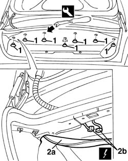
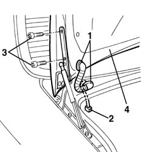

7210E54 boot
- Path
- Procedures > 72 PANELS AND FRAME > 7210 REMOVING REFITTING > 7210E external parts > 7210E54 boot
- Kind
- repair procedure (removal / refitting; the operation number is the code)
- Applies to
- all engines; all production periods
- Interactive page
- https://sloeber94.github.io/elrnDB-a156/en/#/3239054
Applies to: all engines; all production periods
 Removing
Removing
 Refitting
Refitting1. Open the boot lid and, using the special tool, remove the rear retaining buttons from the top trim.
 | Name | Country |
|---|---|---|
1 | Scraper blade | 1.823.015.000 |
2. Lower the top trim (2a), disconnect the electrical connection (2b) and withdraw it.
 | Name | Connector |
|---|---|---|
2b | Boot / rear coupling |

Applies to: all engines; all production periods
1. Withdraw the wiring sleeve from both ends.
2. Withdraw the wiring.
Support the boot lid with the assistance of a second operator.
3. Undo the bolts from both sides of the boot lid.
4. Remove the boot lid.
Applies to: all engines; all production periods
Refitting
RemovingCheck that the boot lid and hinges are undamaged.
Fit the boot lid.
Tighten the hinge bolts without tightening them.
Insert the wiring and fit the wiring sleeve.
Connect the electrical connection and fit it in its seating.
Fit the rear retaining buttons on the top trim.
